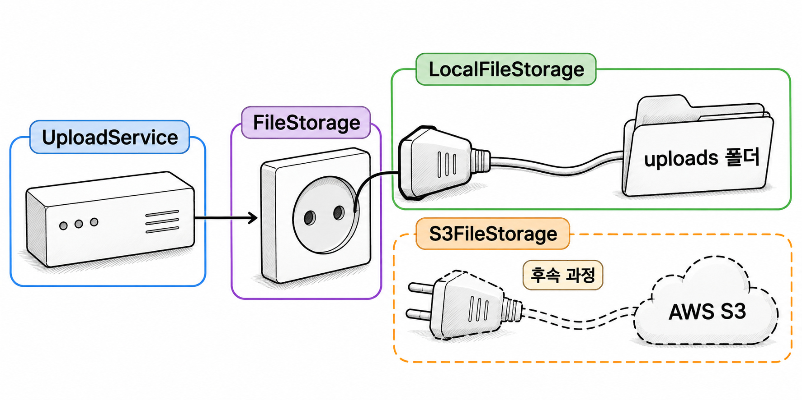
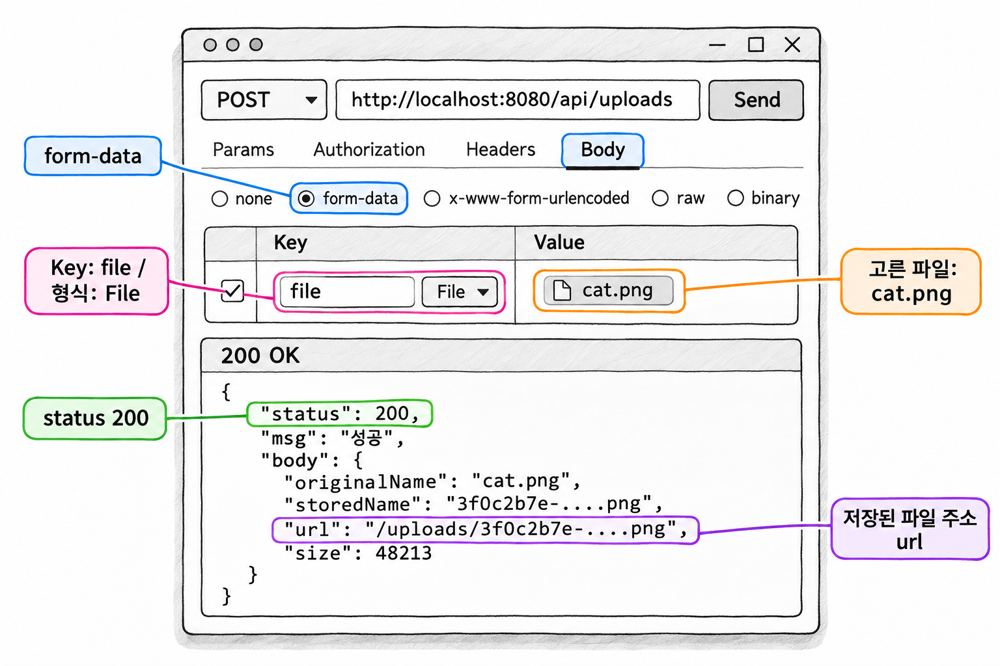
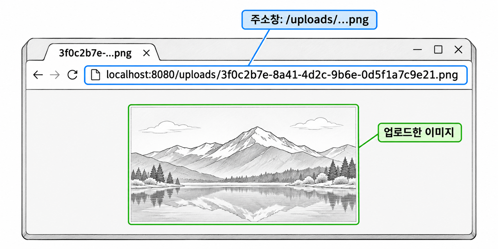

23장. 파일 업로드란?
1. 파일 업로드의 개념
1.1 multipart/form-data 요청
지금까지 만든 API는 요청 본문을 JSON으로 받았습니다. JSON은 글자로 이루어진 형식이라 이미지 같은 바이너리 파일을 그대로 담기 어렵습니다. 파일을 글자로 바꿔 넣는 방법도 있지만, 그러면 크기가 원래보다 커집니다. 그래서 브라우저와 HTTP 클라이언트는 파일을 보낼 때 multipart/form-data라는 본문 형식을 씁니다.
multipart/form-data 본문은 여러 파트(part)로 나뉩니다. 파트 하나에는 값 하나가 들어갑니다. 파일 파트에는 파일 바이트가 그대로, 글자 파트에는 짧은 글자가 들어갑니다. 파트 사이에는 경계 문자열(boundary)을 넣어 구분합니다. 경계 문자열은 클라이언트가 요청마다 정하고 Content-Type 헤더에 함께 적어 보냅니다.
코드 조각
POST /api/uploads HTTP/1.1
Host: localhost:8080
Authorization: Bearer eyJ0eXAiOiJKV1Qi...
Content-Type: multipart/form-data; boundary=----Boundary7MA4YWxk
------Boundary7MA4YWxk
Content-Disposition: form-data; name="file"; filename="cat.png"
Content-Type: image/png
(cat.png 파일의 바이트)
------Boundary7MA4YWxk
Content-Disposition: form-data; name="memo"
고양이 사진
------Boundary7MA4YWxk--이 요청 본문에는 파트가 두 개 있습니다. 각 파트의 Content-Disposition 줄에 있는 name이 파트 이름이고, 서버는 이 이름으로 원하는 파트를 꺼냅니다. 파일 파트에는 filename(클라이언트 컴퓨터에 있던 원래 파일 이름)과 파트별 Content-Type이 더 붙습니다. 본문 끝은 경계 문자열 뒤에 --를 붙여 표시합니다.
경계 문자열은 Postman이나 브라우저가 알아서 만듭니다. 그러니 Content-Type 헤더를 손으로 적지 않습니다. 손으로 multipart/form-data만 적으면 boundary 값이 빠져서 서버가 본문을 파트로 나누지 못합니다.
1.2 파일은 어디에 저장할까?
받은 파일을 둘 곳은 몇 가지가 있고, 저마다 장단점이 다릅니다.
| 저장 위치 | 방식 | 장점 | 단점 |
|---|---|---|---|
| 데이터베이스 | 파일 바이트를 테이블 열에 저장 | 데이터와 파일을 함께 백업 | DB가 커지고 조회가 느려짐 |
| 서버의 로컬 폴더 | 서버 컴퓨터의 폴더에 파일로 저장 | 설정이 간단하고 개발할 때 확인이 쉬움 | 서버를 여러 대 두거나 컨테이너를 새로 띄우면 파일이 흩어지거나 사라짐 |
| 객체 스토리지 | AWS S3 같은 파일 전용 저장소에 저장 | 서버와 따로 관리되어 서버를 바꿔도 파일이 남음 | 외부 서비스 계정과 설정이 필요 |
실무에서는 보통 파일을 객체 스토리지에 두고, DB에는 파일의 주소나 이름만 저장합니다. 이 장에서는 개발 환경에서 바로 확인할 수 있게 로컬 폴더에 저장합니다. 대신 저장 코드를 인터페이스 뒤에 숨겨서, 후속 과정에서 S3에 저장하는 구현으로 바꿔 끼울 수 있게 만듭니다.
2. MultipartFile로 파일 받기
2.1 MultipartFile과 @RequestParam
MultipartFile은 multipart 요청의 파일 파트 하나를 나타내는 스프링 인터페이스입니다. 요청이 들어오면 스프링이 본문을 파트로 나눕니다. 컨트롤러 메서드의 매개변수에 @RequestParam("파트이름") MultipartFile을 쓰면, 그 이름의 파일 파트가 MultipartFile 객체로 들어옵니다. 8장에서 쿼리 문자열 값을 받을 때 쓴 @RequestParam을 파트를 받을 때도 씁니다.
기본 문법
@PostMapping(value = "주소", consumes = MediaType.MULTIPART_FORM_DATA_VALUE)
public ResponseEntity<?> 메서드명(@RequestParam("파트이름") MultipartFile 변수명) {
}consumes는 이 메서드가 받는 요청 본문의 형식을 정합니다. MULTIPART_FORM_DATA_VALUE로 정해 두면 JSON 같은 다른 형식으로 보낸 요청은 메서드까지 오지 않습니다. 스프링이 415 Unsupported Media Type으로 거절하고, 7장에서 만든 exUnknown()이 이 상태 코드 그대로 응답합니다.
MultipartFile에서 자주 쓰는 메서드는 다음과 같습니다.
| 메서드 | 돌려주는 값 |
|---|---|
getOriginalFilename() | 클라이언트가 보낸 원래 파일 이름(filename) |
getContentType() | 파일 파트의 Content-Type(예: image/png) |
getSize() | 파일 크기(바이트) |
isEmpty() | 파일이 비어 있으면 true |
getInputStream() | 파일 내용을 읽는 InputStream |
먼저 파일을 받아서 파일 정보만 돌려주는 API를 만듭니다. 업로드는 게시글이나 회원과 다른 기능이므로, 6장의 기능별 패키지 구성에 따라 upload 패키지를 새로 만듭니다.
예제 23-1 — 업로드한 파일 정보 돌려받기
이어서: 예제 22-4
파일명: src/main/java/com/newtenco/blog/upload/UploadResponse.java
package com.newtenco.blog.upload;
public class UploadResponse {
public record InfoDTO(String originalName, String contentType, long size) {
}
}파일명: src/main/java/com/newtenco/blog/upload/UploadController.java
package com.newtenco.blog.upload;
import com.newtenco.blog.core.util.Resp;
import org.springframework.http.MediaType;
import org.springframework.http.ResponseEntity;
import org.springframework.web.bind.annotation.PostMapping;
import org.springframework.web.bind.annotation.RequestParam;
import org.springframework.web.bind.annotation.RestController;
import org.springframework.web.multipart.MultipartFile;
@RestController
public class UploadController {
@PostMapping(value = "/api/uploads", consumes = MediaType.MULTIPART_FORM_DATA_VALUE)
public ResponseEntity<?> upload(@RequestParam("file") MultipartFile file) {
UploadResponse.InfoDTO respDTO = new UploadResponse.InfoDTO(
file.getOriginalFilename(), file.getContentType(), file.getSize());
return Resp.ok(respDTO);
}
}실행 결과
gradlew.bat bootRun으로 서버를 다시 실행하면 오류 없이 시작됩니다. 실제로 파일을 보내 보는 일은 저장 기능까지 완성한 뒤 4.2에서 Postman으로 합니다.
multipart 요청을 파트로 나누는 일은 Spring Boot가 자동 설정으로 해 줍니다. starter-webmvc 안에 multipart 처리 설정이 들어 있어서 의존성을 따로 더하지 않아도 됩니다. 이 시점의 MultipartFile은 메모리나 임시 파일에만 있고, 요청 처리가 끝나면 사라집니다. 오래 남기려면 3절처럼 직접 저장해야 합니다.
2.2 업로드 크기 제한(spring.servlet.multipart)
크기 제한이 없으면 누군가 수 GB짜리 파일을 보내 서버의 메모리와 디스크를 채울 수 있습니다. Spring Boot는 기본으로 파일 하나는 1MB, 요청 전체는 10MB까지만 받습니다. 사진 한 장이 1MB를 넘는 일이 흔하므로 이 프로젝트에 맞게 값을 정합니다.
| 설정 키 | 뜻 | 기본값 |
|---|---|---|
spring.servlet.multipart.max-file-size | 파일 하나의 최대 크기 | 1MB |
spring.servlet.multipart.max-request-size | 요청 하나에 든 파트 전체의 최대 크기 | 10MB |
크기 제한은 개발 환경과 운영 환경에서 같아야 합니다. 그래서 21장에서 나눈 공통 설정 파일 application.properties의 끝에 다음 두 줄을 더합니다.
코드 조각
# 파일 업로드
spring.servlet.multipart.max-file-size=5MB
spring.servlet.multipart.max-request-size=10MB파일 하나는 5MB까지 받고, 한 요청에 파일 여러 개를 보내면 합해서 10MB까지 받습니다. 값에는 KB · MB · GB 단위를 붙여 씁니다.
2.3 크기 초과와 빈 파일 오류 처리
업로드 요청이 실패하는 경우는 세 가지입니다. 세 경우 모두 클라이언트가 요청을 고쳐 다시 보내야 하므로 4xx 상태 코드로 응답합니다.
| 상황 | 발생하는 예외 | 응답 |
|---|---|---|
| 파일이 5MB를 넘음 | MaxUploadSizeExceededException | 413 |
file 파트를 아예 보내지 않음 | MissingServletRequestPartException | 400 |
| 크기가 0바이트인 파일을 보냄 | 예외 없음(isEmpty()가 true) | 400 |
크기를 넘으면 스프링은 컨트롤러를 부르기 전, 요청 본문을 파트로 나누는 단계에서 MaxUploadSizeExceededException을 던집니다. 이 예외는 ErrorResponse를 구현하므로 7장의 exUnknown()이 413 상태 코드로 응답하기는 합니다. 하지만 메시지가 영어 상태 문구라서 클라이언트가 화면에 그대로 보여 주기 어렵습니다. 그래서 처리기를 따로 만들어 한국어 메시지를 돌려줍니다. 413의 이름은 Content Too Large이고, 코드에서는 HttpStatus.CONTENT_TOO_LARGE로 씁니다.
file 파트가 빠졌을 때는 11장에서 다룬 MissingServletRequestParameterException이 아니라 MissingServletRequestPartException이 발생합니다. @RequestParam이 받는 타입이 MultipartFile이면 스프링이 쿼리 파라미터가 아니라 파트를 찾기 때문입니다.
0바이트 파일은 스프링 입장에서는 정상 요청입니다. 그래서 코드에서 isEmpty()로 직접 검사하고, 11장에서 만든 BadRequestException을 던집니다.
예제 23-2 — 업로드 오류를 Resp로 응답하기
이어서: 예제 23-1
파일명: src/main/java/com/newtenco/blog/core/handler/GlobalExceptionHandler.java
package com.newtenco.blog.core.handler;
import com.newtenco.blog.core.handler.errors.BadRequestException;
import com.newtenco.blog.core.handler.errors.ForbiddenException;
import com.newtenco.blog.core.handler.errors.NotFoundException;
import com.newtenco.blog.core.handler.errors.UnauthorizedException;
import com.newtenco.blog.core.util.Resp;
import lombok.extern.slf4j.Slf4j;
import org.springframework.http.HttpStatus;
import org.springframework.http.ResponseEntity;
import org.springframework.validation.FieldError;
import org.springframework.web.ErrorResponse;
import org.springframework.web.bind.MethodArgumentNotValidException;
import org.springframework.web.bind.MissingServletRequestParameterException;
import org.springframework.web.bind.annotation.ExceptionHandler;
import org.springframework.web.bind.annotation.RestControllerAdvice;
import org.springframework.web.multipart.MaxUploadSizeExceededException;
import org.springframework.web.multipart.support.MissingServletRequestPartException;
@Slf4j
@RestControllerAdvice
public class GlobalExceptionHandler {
@ExceptionHandler(MethodArgumentNotValidException.class)
public ResponseEntity<?> validation(MethodArgumentNotValidException e) {
FieldError fe = e.getBindingResult().getFieldErrors().getFirst();
return Resp.fail(HttpStatus.BAD_REQUEST, fe.getDefaultMessage());
}
@ExceptionHandler(MissingServletRequestParameterException.class)
public ResponseEntity<?> missingParam(MissingServletRequestParameterException e) {
return Resp.fail(HttpStatus.BAD_REQUEST, e.getParameterName() + ":값을 입력해주세요");
}
@ExceptionHandler(MissingServletRequestPartException.class)
public ResponseEntity<?> missingPart(MissingServletRequestPartException e) {
return Resp.fail(HttpStatus.BAD_REQUEST, e.getRequestPartName() + ":파일을 선택해주세요");
}
@ExceptionHandler(MaxUploadSizeExceededException.class)
public ResponseEntity<?> fileTooLarge(MaxUploadSizeExceededException e) {
return Resp.fail(HttpStatus.CONTENT_TOO_LARGE, "파일은 5MB까지 올릴 수 있습니다");
}
@ExceptionHandler(BadRequestException.class)
public ResponseEntity<?> ex400(BadRequestException e) {
return Resp.fail(HttpStatus.BAD_REQUEST, e.getMessage());
}
@ExceptionHandler(UnauthorizedException.class)
public ResponseEntity<?> ex401(UnauthorizedException e) {
return Resp.fail(HttpStatus.UNAUTHORIZED, e.getMessage());
}
@ExceptionHandler(ForbiddenException.class)
public ResponseEntity<?> ex403(ForbiddenException e) {
return Resp.fail(HttpStatus.FORBIDDEN, e.getMessage());
}
@ExceptionHandler(NotFoundException.class)
public ResponseEntity<?> ex404(NotFoundException e) {
return Resp.fail(HttpStatus.NOT_FOUND, e.getMessage());
}
@ExceptionHandler(Exception.class)
public ResponseEntity<?> exUnknown(Exception e) {
if (e instanceof ErrorResponse er) {
HttpStatus status = HttpStatus.valueOf(er.getStatusCode().value());
return Resp.fail(status, status.getReasonPhrase());
}
log.error("예상하지 못한 오류", e);
return Resp.fail(HttpStatus.INTERNAL_SERVER_ERROR, "관리자에게 문의하세요");
}
}파일명: src/main/java/com/newtenco/blog/upload/UploadController.java
package com.newtenco.blog.upload;
import com.newtenco.blog.core.handler.errors.BadRequestException;
import com.newtenco.blog.core.util.Resp;
import org.springframework.http.MediaType;
import org.springframework.http.ResponseEntity;
import org.springframework.web.bind.annotation.PostMapping;
import org.springframework.web.bind.annotation.RequestParam;
import org.springframework.web.bind.annotation.RestController;
import org.springframework.web.multipart.MultipartFile;
@RestController
public class UploadController {
@PostMapping(value = "/api/uploads", consumes = MediaType.MULTIPART_FORM_DATA_VALUE)
public ResponseEntity<?> upload(@RequestParam("file") MultipartFile file) {
if (file.isEmpty()) {
throw new BadRequestException("빈 파일은 올릴 수 없습니다");
}
UploadResponse.InfoDTO respDTO = new UploadResponse.InfoDTO(
file.getOriginalFilename(), file.getContentType(), file.getSize());
return Resp.ok(respDTO);
}
}실행 결과
서버가 오류 없이 다시 시작됩니다. 세 가지 실패 응답은 4.2에서 확인합니다.
크기 초과 예외는 컨트롤러 밖에서 발생하지만 @RestControllerAdvice가 처리할 수 있습니다. 본문을 파트로 나누는 일은 7장에서 본 DispatcherServlet이 맡고, 여기서 난 예외도 DispatcherServlet이 처리기를 찾아 넘겨주기 때문입니다. 이 점에서 14장의 인증 필터처럼 DispatcherServlet보다 앞에서 난 예외와 다릅니다.
fileTooLarge()의 메시지에 적은 5MB는 2.2의 설정값에 맞춰 적어 둔 글자일 뿐입니다. 설정을 바꾸면 메시지도 함께 고쳐야 합니다. 제한보다 훨씬 큰 파일(수십 MB)을 보내면 이 응답 대신 연결이 끊길 수 있습니다. 내장 Tomcat은 거절한 요청에서 읽지 않고 남은 본문을 server.tomcat.max-swallow-size(기본 2MB)까지만 읽어 버리고, 그보다 많이 남으면 연결을 닫기 때문입니다.
3. 로컬 폴더에 저장하기
3.1 저장 기능을 인터페이스로 나누기
파일을 저장하는 코드를 서비스 안에 직접 쓰면, 나중에 저장 위치를 S3로 바꿀 때 서비스 코드를 다시 써야 합니다. 그래서 "파일을 저장하고 접근 주소를 돌려준다"는 약속만 인터페이스 FileStorage로 정하고, 서비스는 이 인터페이스에만 의존합니다. 로컬 폴더에 저장하는 실제 코드는 구현 클래스 LocalFileStorage가 맡습니다.

그림 23-1처럼 서비스는 콘센트 모양의 인터페이스만 압니다. 2장에서 본 대로 스프링은 생성자의 매개변수 타입에 맞는 빈을 찾아 주입합니다. FileStorage 타입의 빈이 LocalFileStorage 하나뿐이면 그 빈이 들어갑니다. 나중에 S3FileStorage를 빈으로 만들고 LocalFileStorage를 빈에서 빼면, 서비스 코드를 고치지 않아도 저장 위치가 바뀝니다.
save()가 저장한 파일의 주소를 돌려주는 것도 같은 이유입니다. 로컬 폴더라면 /uploads/파일이름, S3라면 S3 주소처럼 저장 위치에 따라 주소가 달라집니다. 그래서 주소를 만드는 일은 저장 위치를 아는 구현 클래스가 맡습니다.
서비스 UploadService도 이번에 만듭니다. 빈 파일 검사는 업무 규칙이므로 컨트롤러에서 서비스로 옮깁니다. 응답 DTO는 저장한 결과를 담는 DTO로 바꿉니다. 이 단계에서는 저장 폴더를 코드에 uploads로 적고, 파일 이름도 원래 이름을 그대로 씁니다. 이 두 가지는 3.2와 3.3에서 차례로 고칩니다.
예제 23-3 — 저장 기능을 인터페이스로 나누기
이어서: 예제 23-2
파일명: src/main/java/com/newtenco/blog/upload/FileStorage.java
package com.newtenco.blog.upload;
import org.springframework.web.multipart.MultipartFile;
public interface FileStorage {
// 파일을 storedName으로 저장하고, 저장한 파일을 열 수 있는 주소를 돌려준다
String save(MultipartFile file, String storedName);
}파일명: src/main/java/com/newtenco/blog/upload/LocalFileStorage.java
package com.newtenco.blog.upload;
import org.springframework.stereotype.Component;
import org.springframework.web.multipart.MultipartFile;
import java.io.IOException;
import java.io.InputStream;
import java.io.UncheckedIOException;
import java.nio.file.Files;
import java.nio.file.Path;
import java.nio.file.StandardCopyOption;
@Component
public class LocalFileStorage implements FileStorage {
private final Path root = Path.of("uploads").toAbsolutePath().normalize();
@Override
public String save(MultipartFile file, String storedName) {
try (InputStream in = file.getInputStream()) {
Files.createDirectories(root);
Files.copy(in, root.resolve(storedName), StandardCopyOption.REPLACE_EXISTING);
} catch (IOException e) {
throw new UncheckedIOException("파일 저장 실패: " + storedName, e);
}
return "/uploads/" + storedName;
}
}파일명: src/main/java/com/newtenco/blog/upload/UploadResponse.java
package com.newtenco.blog.upload;
public class UploadResponse {
public record DTO(String originalName, String storedName, String url, long size) {
}
}파일명: src/main/java/com/newtenco/blog/upload/UploadService.java
package com.newtenco.blog.upload;
import com.newtenco.blog.core.handler.errors.BadRequestException;
import lombok.RequiredArgsConstructor;
import org.springframework.stereotype.Service;
import org.springframework.web.multipart.MultipartFile;
@RequiredArgsConstructor
@Service
public class UploadService {
private final FileStorage fileStorage;
public UploadResponse.DTO 파일업로드(MultipartFile file) {
if (file.isEmpty()) {
throw new BadRequestException("빈 파일은 올릴 수 없습니다");
}
String originalName = file.getOriginalFilename();
String url = fileStorage.save(file, originalName);
return new UploadResponse.DTO(originalName, originalName, url, file.getSize());
}
}파일명: src/main/java/com/newtenco/blog/upload/UploadController.java
package com.newtenco.blog.upload;
import com.newtenco.blog.core.util.Resp;
import lombok.RequiredArgsConstructor;
import org.springframework.http.MediaType;
import org.springframework.http.ResponseEntity;
import org.springframework.web.bind.annotation.PostMapping;
import org.springframework.web.bind.annotation.RequestParam;
import org.springframework.web.bind.annotation.RestController;
import org.springframework.web.multipart.MultipartFile;
@RequiredArgsConstructor
@RestController
public class UploadController {
private final UploadService uploadService;
@PostMapping(value = "/api/uploads", consumes = MediaType.MULTIPART_FORM_DATA_VALUE)
public ResponseEntity<?> upload(@RequestParam("file") MultipartFile file) {
return Resp.ok(uploadService.파일업로드(file));
}
}실행 결과
서버가 오류 없이 다시 시작됩니다. 이제 업로드한 파일이 프로젝트 폴더 아래 uploads 폴더에 실제로 저장됩니다.
Files.copy()는 getInputStream()으로 읽은 파일 내용을 저장 경로에 씁니다. MultipartFile에도 파일을 옮기는 transferTo() 메서드가 있습니다. 하지만 상대 경로를 넘기면 내장 Tomcat의 임시 폴더를 기준으로 저장될 수 있습니다. 그래서 이 책에서는 절대 경로로 바꾼 root에 Files.copy()로 씁니다.
저장 중에 디스크 오류가 나면 IOException이 발생합니다. 클라이언트가 고칠 수 없는 서버 문제이므로 UncheckedIOException으로 감싸 던집니다. 그러면 7장의 exUnknown()이 로그를 남기고 500으로 응답합니다. UploadService는 DB를 쓰지 않으므로 @Transactional을 붙이지 않았습니다.
3.2 저장 경로를 설정값으로 받기
예제 23-3의 uploads는 서버를 실행한 폴더를 기준으로 한 상대 경로입니다. gradlew.bat bootRun은 프로젝트 폴더에서 실행하므로 개발 중에는 프로젝트 폴더 아래에 저장됩니다. 운영 서버에서는 보통 따로 마련한 폴더에 저장합니다. 경로를 코드에 적어 두면 환경마다 코드를 고쳐야 하므로, 2장에서 배운 대로 설정 키를 직접 만들고 @Value로 받습니다. 공통 설정 파일 application.properties의 끝에 다음 줄을 더합니다.
코드 조각
# 업로드 파일 저장 폴더
app.upload.dir=uploads예제 23-4 — 저장 폴더를 설정값으로 받기
이어서: 예제 23-3
파일명: src/main/java/com/newtenco/blog/upload/LocalFileStorage.java
package com.newtenco.blog.upload;
import org.springframework.beans.factory.annotation.Value;
import org.springframework.stereotype.Component;
import org.springframework.web.multipart.MultipartFile;
import java.io.IOException;
import java.io.InputStream;
import java.io.UncheckedIOException;
import java.nio.file.Files;
import java.nio.file.Path;
import java.nio.file.StandardCopyOption;
@Component
public class LocalFileStorage implements FileStorage {
private final Path root;
public LocalFileStorage(@Value("${app.upload.dir}") String uploadDir) {
this.root = Path.of(uploadDir).toAbsolutePath().normalize();
}
@Override
public String save(MultipartFile file, String storedName) {
try (InputStream in = file.getInputStream()) {
Files.createDirectories(root);
Files.copy(in, root.resolve(storedName), StandardCopyOption.REPLACE_EXISTING);
} catch (IOException e) {
throw new UncheckedIOException("파일 저장 실패: " + storedName, e);
}
return "/uploads/" + storedName;
}
}실행 결과
서버가 오류 없이 다시 시작됩니다. 설정값이 uploads이므로 저장 위치는 예제 23-3과 같습니다.
app.upload.dir 키를 빼먹으면 LocalFileStorage 빈을 만들지 못해 서버가 시작되지 않습니다. 22장에서 본 대로 APP_UPLOAD_DIR 환경 변수를 넣으면 코드를 고치지 않고 같은 키의 값을 바꿀 수 있습니다. 운영 서버에서 저장 폴더만 다르게 하고 싶을 때 이 방법을 씁니다.
업로드한 파일은 소스 코드가 아니므로 Git에 올리지 않습니다. 프로젝트의 .gitignore에 /uploads/ 한 줄을 더해 둡니다.
3.3 UUID로 파일 이름 바꾸기와 확장자 검사
지금은 클라이언트가 보낸 원래 파일 이름 그대로 저장합니다. 이 방식에는 문제가 두 가지 있습니다. 첫째, 두 사람이 cat.png를 올리면 REPLACE_EXISTING 때문에 뒤에 올린 파일이 앞 파일을 덮어씁니다. 둘째, 파일 이름은 클라이언트가 마음대로 정하는 값입니다. ../../application.properties 같은 이름을 보내면 저장 폴더 밖의 파일을 덮어쓸 위험이 있습니다.
그래서 저장할 이름은 서버가 새로 만듭니다. UUID(Universally Unique Identifier)는 겹칠 가능성이 사실상 없는 128비트 무작위 값입니다. UUID.randomUUID()로 만들면 3f0c2b7e-8a41-4d2c-9b6e-0d5f1a7c9e21 같은 글자가 됩니다. 이 값 뒤에 원래 확장자만 붙이면 이름이 겹치지 않고, ../ 같은 경로 문자도 들어갈 수 없습니다. 원래 이름은 응답의 originalName에만 담아 돌려줍니다.
확장자는 허용 목록으로 검사합니다. 블로그 글에 넣을 이미지만 받을 것이므로 jpg · jpeg · png · gif만 허용합니다. 위험한 확장자를 막는 차단 목록 방식은 빠뜨린 확장자가 그대로 통과하므로 쓰지 않습니다. 확장자가 대문자로 올 수도 있어서 소문자로 바꾼 뒤 비교합니다.
예제 23-5 — UUID 이름으로 저장하고 확장자 검사하기
이어서: 예제 23-4
파일명: src/main/java/com/newtenco/blog/upload/UploadService.java
package com.newtenco.blog.upload;
import com.newtenco.blog.core.handler.errors.BadRequestException;
import lombok.RequiredArgsConstructor;
import org.springframework.stereotype.Service;
import org.springframework.web.multipart.MultipartFile;
import java.util.Set;
import java.util.UUID;
@RequiredArgsConstructor
@Service
public class UploadService {
private static final Set<String> ALLOWED_EXTENSIONS = Set.of("jpg", "jpeg", "png", "gif");
private final FileStorage fileStorage;
public UploadResponse.DTO 파일업로드(MultipartFile file) {
if (file.isEmpty()) {
throw new BadRequestException("빈 파일은 올릴 수 없습니다");
}
String originalName = file.getOriginalFilename();
String extension = 확장자추출(originalName);
if (!ALLOWED_EXTENSIONS.contains(extension)) {
throw new BadRequestException("jpg, jpeg, png, gif 파일만 올릴 수 있습니다");
}
String storedName = UUID.randomUUID() + "." + extension;
String url = fileStorage.save(file, storedName);
return new UploadResponse.DTO(originalName, storedName, url, file.getSize());
}
private String 확장자추출(String originalName) {
if (originalName == null) {
throw new BadRequestException("파일 이름이 없습니다");
}
int dot = originalName.lastIndexOf('.');
if (dot == -1 || dot == originalName.length() - 1) {
throw new BadRequestException("확장자가 없는 파일은 올릴 수 없습니다");
}
return originalName.substring(dot + 1).toLowerCase();
}
}실행 결과
서버가 오류 없이 다시 시작됩니다. 업로드 결과와 확장자 검사 실패 응답은 4.2에서 확인합니다.
lastIndexOf('.')로 찾은 마지막 점 뒤를 확장자로 봅니다. 그래서 photo.backup.png의 확장자는 png입니다. 확장자는 파일 이름의 일부일 뿐이어서 내용이 정말 이미지인지는 보장하지 못합니다. getContentType() 값도 클라이언트가 보낸 글자라 믿을 수 없습니다. 이 장에서는 확장자 검사까지만 하고, 저장 이름을 서버가 정해서 그 파일이 서버에서 실행되지 않게 막는 데 집중합니다.
4. 업로드 API 완성
4.1 인증 규칙과 Resp 응답
업로드 주소 /api/uploads는 14장과 18장에서 정한 /api/** 규칙에 걸립니다. 그래서 SecurityConfig를 고치지 않아도 로그인한 회원만 파일을 올릴 수 있습니다. 토큰 없이 보낸 요청은 컨트롤러까지 오지 못하고 인증 필터 단계에서 401로 끝납니다. 아무나 파일을 올릴 수 있으면 서버 디스크가 쓸모없는 파일로 차므로 업로드에는 로그인이 필요합니다.
응답 모양도 다른 API와 같습니다. 성공하면 UploadController가 Resp.ok()로 감싸고, 실패하면 GlobalExceptionHandler가 예외를 Resp.fail()로 바꿉니다. 업로드 API에서 나올 수 있는 응답은 다음과 같습니다.
| 상황 | 상태 코드 | msg |
|---|---|---|
| 업로드 성공 | 200 | 성공 |
| 토큰 없음 | 401 | 로그인 후 이용해주세요 |
file 파트 없음 | 400 | file:파일을 선택해주세요 |
| 0바이트 파일 | 400 | 빈 파일은 올릴 수 없습니다 |
| 허용하지 않은 확장자 | 400 | jpg, jpeg, png, gif 파일만 올릴 수 있습니다 |
| 5MB 초과 | 413 | 파일은 5MB까지 올릴 수 있습니다 |
| multipart가 아닌 요청 | 415 | Unsupported Media Type |
업로드 API는 파일을 저장하고 주소만 돌려줍니다. 클라이언트는 이 주소를 받아 글 내용에 넣어 저장합니다. 그래서 업로드 기능은 게시글 엔티티나 DB 테이블을 바꾸지 않습니다.
4.2 Postman으로 파일 보내기
먼저 POST http://localhost:8080/login에 ssar 계정({"username": "ssar", "password": "1234"})으로 로그인하고, 응답 헤더 Authorization의 값을 복사합니다.
Postman에서 새 요청을 만들고 다음처럼 설정합니다.
- 메서드를
POST, 주소를http://localhost:8080/api/uploads로 정합니다. - Headers 탭에 Key
Authorization, Value에 복사한Bearer ...값을 넣습니다. - Body 탭에서
form-data를 고릅니다. - Key 칸에
file을 적고, Key 칸 오른쪽의 형식 선택을Text에서File로 바꿉니다. - Value 칸의 Select Files를 눌러 5MB보다 작은 png 파일(예:
cat.png)을 고르고 Send를 누릅니다.
1.1에서 본 대로 Headers 탭에 Content-Type을 직접 넣지 않습니다. form-data를 고르면 Postman이 경계 문자열이 들어간 Content-Type을 자동으로 붙입니다.
실행 결과
{
"status": 200,
"msg": "성공",
"body": {
"originalName": "cat.png",
"storedName": "3f0c2b7e-8a41-4d2c-9b6e-0d5f1a7c9e21.png",
"url": "/uploads/3f0c2b7e-8a41-4d2c-9b6e-0d5f1a7c9e21.png",
"size": 48213
}
}storedName과 url의 UUID는 요청할 때마다 달라지고, size는 고른 파일의 크기입니다. IntelliJ의 프로젝트 창에서 uploads 폴더를 열면 storedName과 같은 이름의 파일이 생겨 있습니다.

생성형 예시 · 실제 실행 안 함
같은 요청을 조금씩 바꿔 실패 응답을 확인합니다.
- Headers 탭의
Authorization을 끄고 보내면 401이 옵니다. - Body의 Key를
image로 바꿔 보내면file파트가 없으므로 400과file:파일을 선택해주세요가 옵니다. memo.txt같은 텍스트 파일을 고르면 400과jpg, jpeg, png, gif 파일만 올릴 수 있습니다가 옵니다.- 5MB를 조금 넘는 이미지(예: 6MB)를 고르면 413이 옵니다.
실행 결과
{
"status": 413,
"msg": "파일은 5MB까지 올릴 수 있습니다",
"body": null
}실패한 요청은 서비스의 저장 코드까지 가지 않으므로 uploads 폴더에 새 파일이 생기지 않습니다.
4.3 저장한 파일을 주소로 열기
응답의 url 앞에 http://localhost:8080을 붙여 브라우저에서 http://localhost:8080/uploads/...png를 열어도 아직 이미지가 보이지 않습니다. 서버가 /uploads/** 주소를 uploads 폴더와 연결하지 않았고, 보안 규칙도 이 주소를 막고 있기 때문입니다. 두 가지를 차례로 풀어 줍니다.
먼저 주소와 폴더를 연결합니다. WebMvcConfigurer는 Spring MVC 설정을 더할 때 구현하는 인터페이스입니다. 이 인터페이스의 addResourceHandlers()에서 주소 패턴과 파일 위치를 짝지으면, 그 주소로 온 GET 요청에 스프링이 폴더 안 파일을 그대로 돌려줍니다. 컨트롤러를 따로 만들지 않아도 됩니다.
예제 23-6 — 업로드 폴더를 주소에 연결하기
이어서: 예제 23-5
파일명: src/main/java/com/newtenco/blog/core/WebConfig.java
package com.newtenco.blog.core;
import org.springframework.beans.factory.annotation.Value;
import org.springframework.context.annotation.Configuration;
import org.springframework.web.servlet.config.annotation.ResourceHandlerRegistry;
import org.springframework.web.servlet.config.annotation.WebMvcConfigurer;
import java.nio.file.Path;
@Configuration
public class WebConfig implements WebMvcConfigurer {
private final String uploadDir;
public WebConfig(@Value("${app.upload.dir}") String uploadDir) {
this.uploadDir = uploadDir;
}
@Override
public void addResourceHandlers(ResourceHandlerRegistry registry) {
String location = Path.of(uploadDir).toAbsolutePath().normalize().toUri().toString();
if (!location.endsWith("/")) {
location = location + "/";
}
registry.addResourceHandler("/uploads/**")
.addResourceLocations(location);
}
}toUri()는 경로를 file:///C:/.../uploads/ 같은 파일 주소로 바꿉니다. addResourceLocations()에 넘기는 폴더 주소는 끝이 /여야 그 폴더 안의 파일을 찾습니다. 폴더가 아직 없으면 toUri()가 끝에 /를 붙이지 않으므로 직접 붙여 줍니다. 저장 폴더는 LocalFileStorage와 같은 app.upload.dir에서 읽기 때문에 두 클래스가 늘 같은 폴더를 가리킵니다.
다음으로 보안 규칙을 엽니다. 글 본문에 들어간 이미지는 로그인하지 않은 방문자에게도 보여야 합니다. 게다가 브라우저가 <img> 태그로 이미지를 불러올 때는 Authorization 헤더를 붙이지 않습니다. 예제 21-4의 SecurityConfig에서 authorizeHttpRequests() 안의 .anyRequest().denyAll() 바로 위에 GET /uploads/**를 여는 규칙 한 줄을 더합니다.
예제 23-7 — 업로드 파일 주소 열기
이어서: 예제 23-6
파일명: src/main/java/com/newtenco/blog/core/SecurityConfig.java
package com.newtenco.blog.core;
import com.newtenco.blog.core.filter.JwtAuthorizationFilter;
import com.newtenco.blog.core.util.JwtUtil;
import com.newtenco.blog.core.util.RespFilter;
import lombok.RequiredArgsConstructor;
import org.springframework.beans.factory.annotation.Value;
import org.springframework.context.annotation.Bean;
import org.springframework.context.annotation.Configuration;
import org.springframework.http.HttpMethod;
import org.springframework.security.config.annotation.web.builders.HttpSecurity;
import org.springframework.security.config.http.SessionCreationPolicy;
import org.springframework.security.crypto.bcrypt.BCryptPasswordEncoder;
import org.springframework.security.crypto.password.PasswordEncoder;
import org.springframework.security.web.SecurityFilterChain;
import org.springframework.security.web.authentication.UsernamePasswordAuthenticationFilter;
import org.springframework.web.cors.CorsConfiguration;
import org.springframework.web.cors.CorsConfigurationSource;
import org.springframework.web.cors.UrlBasedCorsConfigurationSource;
import java.util.List;
@RequiredArgsConstructor
@Configuration
public class SecurityConfig {
private final JwtUtil jwtUtil;
@Value("${app.cors.allowed-origins}")
private List<String> allowedOrigins;
@Bean
public PasswordEncoder passwordEncoder() {
return new BCryptPasswordEncoder();
}
@Bean
public CorsConfigurationSource corsConfigurationSource() {
CorsConfiguration config = new CorsConfiguration();
config.setAllowedOrigins(allowedOrigins);
config.setAllowedMethods(List.of("GET", "POST", "PUT", "DELETE", "OPTIONS"));
config.addAllowedHeader("*");
config.setExposedHeaders(List.of("Authorization", "Refresh-Token"));
UrlBasedCorsConfigurationSource source = new UrlBasedCorsConfigurationSource();
source.registerCorsConfiguration("/**", config);
return source;
}
@Bean
public SecurityFilterChain filterChain(HttpSecurity http) throws Exception {
http.headers(headers -> headers.frameOptions(frame -> frame.sameOrigin()));
http.cors(cors -> cors.configurationSource(corsConfigurationSource()));
http.csrf(csrf -> csrf.disable());
http.formLogin(form -> form.disable());
http.httpBasic(basic -> basic.disable());
http.logout(logout -> logout.disable());
http.sessionManagement(session -> session.sessionCreationPolicy(SessionCreationPolicy.STATELESS));
http.addFilterBefore(new JwtAuthorizationFilter(jwtUtil), UsernamePasswordAuthenticationFilter.class);
http.exceptionHandling(ex -> ex
.authenticationEntryPoint((req, res, e) -> RespFilter.fail(res, 401, "로그인 후 이용해주세요"))
.accessDeniedHandler((req, res, e) -> RespFilter.fail(res, 403, "권한이 없습니다")));
http.authorizeHttpRequests(auth -> auth
.requestMatchers(HttpMethod.OPTIONS, "/**").permitAll()
.requestMatchers("/join", "/login", "/check-username").permitAll()
.requestMatchers(HttpMethod.POST, "/reissue", "/logout").permitAll()
.requestMatchers("/h2-console/**").permitAll()
.requestMatchers("/api/admin/**").hasRole("ADMIN")
.requestMatchers(HttpMethod.GET, "/api/boards/**").permitAll()
.requestMatchers("/api/**").hasAnyRole("USER", "ADMIN")
.requestMatchers(HttpMethod.GET, "/uploads/**").permitAll()
.anyRequest().denyAll()
);
return http.build();
}
}실행 결과
서버를 다시 실행해도 uploads 폴더는 그대로 남아 있습니다. H2 메모리 DB와 달리 파일은 디스크에 저장했기 때문입니다. 4.2에서 받은 url 앞에 http://localhost:8080을 붙여 브라우저 주소창에서 열면, 로그인하지 않은 상태에서도 올린 이미지가 화면에 나타납니다.

생성형 예시 · 실제 실행 안 함
permitAll()에 HttpMethod.GET을 붙였으므로 이 주소로는 파일을 읽기만 할 수 있습니다. 파일은 여전히 /api/uploads로 로그인한 회원만 올릴 수 있습니다. 없는 파일 이름으로 요청하면 스프링이 NoResourceFoundException을 던집니다. 이 예외는 ErrorResponse를 구현하므로 exUnknown()이 404로 응답합니다.
후속 과정에서 S3로 옮기면 파일은 S3 주소로 바로 열리므로 이 WebConfig와 보안 규칙 한 줄은 더 필요 없습니다. 그때는 FileStorage를 구현한 S3용 클래스를 만들고, 서비스와 컨트롤러는 그대로 둡니다.